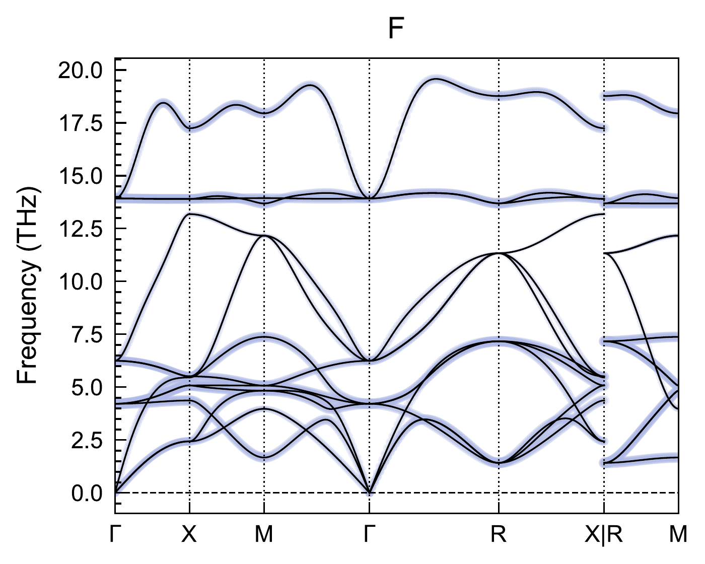
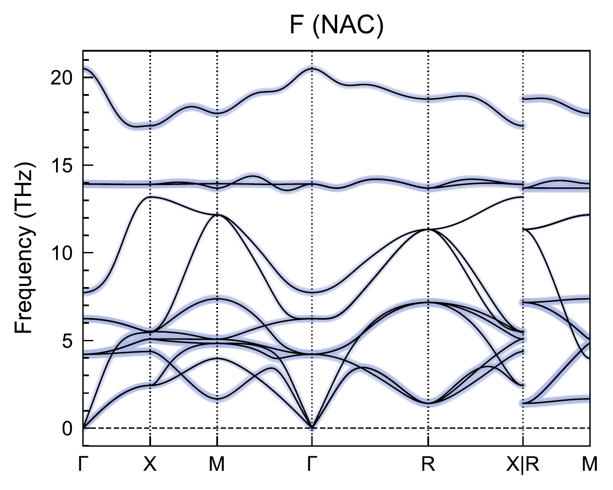

crystod-phonon#
Phonon analyses on top of phonopy data
(POSCAR + FORCE_SETS, or FORCE_CONSTANTS with --readfc, or
phonopy_params.yaml). Seven mode flags: --irreps, --fatband, --lt,
--vector, --modulation, --vibration, --subgroup.
I want to … |
command |
|---|---|
label every mode with its irrep |
|
see which element carries which branch |
|
see which branch is longitudinal |
|
draw one mode as arrows in VESTA |
|
freeze a mode into a structure |
|
list the symmetry-allowed modes, no forces |
|
know which phases an instability can reach |
|
… and get those structures |
|
21. Phonon irreps (--irreps)#
Example directory: example/21_phonon_irrep (testsuite section 21)
Label the phonon modes at the special q points with their irreducible
representations and write phonon_irreps.yaml:
cd example/21_phonon_irrep/SrTiO3_Pm-3m
crystod-phonon --irreps --dim 4 4 4 -c 221_PPOSCAR_SrTiO3
# -> phonon_irreps.yaml (--readfc reads FORCE_CONSTANTS instead of FORCE_SETS)
The file lists, for every special q point, the modes grouped into degenerate sets with their ISO-IR (ISOTROPY, Miller-Love) irrep labels and frequencies in THz — note the antiferrodistortive soft mode at R, an imaginary (negative-frequency) R5- triplet:
space_group: Pm-3m
special_points:
- # GM
q_position: [0.0, 0.0, 0.0]
- # R
q_position: [0.5, 0.5, 0.5]
- # X
q_position: [0.0, 0.5, 0.0]
- # M
q_position: [0.5, 0.5, 0.0]
irreps:
- q_label: GM
q_position: [0.0, 0.0, 0.0]
- # 1 2 3
irrep_label: ['GM4-(3)']
frequency: -0.0000002018
- # 4 5 6
irrep_label: ['GM4-(3)']
frequency: 2.6629186664
...
- q_label: R
q_position: [0.5, 0.5, 0.5]
- # 1 2 3
irrep_label: ['R5-(3)']
frequency: -1.0867090338
...
The comment above each entry (# 1 2 3) gives the 1-based band indices, so a
level can be fed straight back into --vector --mode or --modulation --mode.
Symmetry lines as well (--all-irreps)#
The default survey covers the special points. --all-irreps additionally
labels the midpoint of every seekpath path segment — the symmetry lines
(DT, Z, SM, LD, S, T, …) — and writes phonon_irreps_all.yaml instead, so
both surveys can coexist in one directory:
crystod-phonon --irreps --dim 4 4 4 -c 221_PPOSCAR_SrTiO3 --all-irreps
# -> phonon_irreps_all.yaml
k_path: GM-X-M-GM-R-X | R-M # seekpath
path_midpoints: # midpoints of the k-path segments, ISO-IR k-vector types
- # DT (midpoint of GM-X)
q_position: [0.0, 0.25, 0.0]
- # Z (midpoint of X-M)
q_position: [0.25, 0.5, 0.0]
...
- q_label: DT
segment: GM-X
q_position: [0.0, 0.25, 0.0]
- # 1 2
irrep_label: ['DT5(2)']
frequency: 2.1278014037
- # 3
irrep_label: ['DT1(1)']
frequency: 3.7542651577
...
This is the labeling that tells a branch apart along a line — which of the two
DT5 branches is which — and it is slower than the special-points-only
default.
22. Phonon fatbands (--fatband)#
Example directory: example/22_phonon_fatband (testsuite section 22)
Plot phonon fatbands colored by the element-projected phonon density (sum of
squared eigenvector components over each element’s atoms), directly from
POSCAR + FORCE_SETS (or FORCE_CONSTANTS with --readfc):
cd example/22_phonon_fatband/ScF3_Pm-3m
crystod-phonon --fatband -c 221_PPOSCAR_ScF3 --dim 4 4 4
# -> fatband_Sc.pdf, fatband_F.pdf
{kind=link}

fatband_F.pdf for ScF3 (4x4x4 FORCE_SETS): the F-projected weight (shading)
concentrates on the soft rotational branches around R and M and on the
high-frequency stretching bands, while the Sc-dominated mid-frequency bands
stay unshaded (they appear in fatband_Sc.pdf instead).#
The space group is detected, the high-symmetry k-path is generated
automatically with seekpath, and the band structure is computed with
eigenvectors and band connection through the phonopy API — no band.yaml
needed. One PDF per element is written, in the VESTA default element colors,
with dot sizes proportional to the projected weight.
Options: --element F restricts the output to one element; --band/--band-labels
supply a manual k-path instead of seekpath; --npoints sets the q-point density
per path leg (default 51); --projection-direction "0 0 1" projects the
displacements onto a direction in reduced coordinates before squaring.
Plotting style based on script/phonon_fatband.py by Hiroki Koiso.
LO/TO splitting (--nac)#
crystod-phonon --fatband -c 221_PPOSCAR_ScF3 --dim 4 4 4 --nac
# -> fatband_nac_Sc.pdf, fatband_nac_F.pdf
{kind=link}

fatband_nac_F.pdf — the same F-projected fatband with the non-analytical
term correction (a BORN file in the current directory). The LO/TO splitting
lifts the highest F-dominated branch at Gamma from 13.9 to 20.5 THz, while the
zone-boundary soft modes at R and M are untouched: the correction acts only in
the long-wavelength limit. The plot title carries an “(NAC)” tag, and the file
names get a nac_ prefix so corrected and uncorrected fatbands coexist.#
23. Longitudinal/transverse bands (--lt)#
Example directory: example/23_phonon_lt (testsuite section 23)
Plot the phonon band structure colored by the longitudinal/transverse character of each mode (red = longitudinal, blue = transverse, white = mixed or Gamma):
cd example/23_phonon_lt/ScF3_Pm-3m
crystod-phonon --lt -c 221_PPOSCAR_ScF3 --dim 4 4 4
crystod-phonon --lt -c 221_PPOSCAR_ScF3 --dim 4 4 4 --nac
# -> phonon_band_LT.pdf / phonon_band_LT_nac.pdf

phonon_band_LT.pdf for ScF3: red = longitudinal, blue = transverse,
white = mixed. Along GM-X the acoustic set splits visibly into one red L
branch and two blue T branches; the flat band near 14 THz is purely
transverse throughout the zone.#
The longitudinal character of a mode is sqrt(sum_atoms |q_hat . e_atom|^2),
the norm of the eigenvector projection onto the propagation direction, which is
valid along any path direction including diagonal segments such as GM-R. With
--nac the split-off LO branches show up as purely red. Based on
script/LT_phonon_band.py maintained by Hiroki Koiso, after Qijing Zheng.
24. Phonon eigenvectors (--vector)#
Example directory: example/24_phonon_vector (testsuite section 24)
Diagonalize the dynamical matrix directly at the selected q point via the
phonopy API, list the modes with their frequencies and irrep labels, and export
the selected eigenvectors as .vesta files with per-atom displacement arrows:
cd example/24_phonon_vector/Si_Fd-3m
crystod-phonon --vector --dim "4 4 4" -c 227_PPOSCAR_Si --qpoint GM
Space group: Fd-3m (#227)
Available high-symmetry q-points:
GM [0.0, 0.0, 0.0]
X [0.5, 0.0, 0.5]
L [0.5, 0.5, 0.5]
W [0.5, 0.25, 0.75]
Selected q-point: GM = [0.0, 0.0, 0.0]
Phonon modes at q = GM
Mode Freq (THz) Irrep
----------------------------------------
1 0.0000 GM4-(3)
2 0.0000 GM4-(3)
3 0.0000 GM4-(3)
4 14.9571 GM5+(3)
5 14.9571 GM5+(3)
6 14.9571 GM5+(3)
Mode table written to: phonon_modes_Si_GM.txt
No --mode given; exporting all 6 modes as individual VESTA files.
Commensurate supercell for visualization: 1x1x1
+ mode 1: GM4-(3), 0.0000 THz
Mode 1 written to: POSCAR_Si_GM_mode1_GM4-.vesta
...
+ mode 6: GM5+(3), 14.9571 THz
Mode 6 written to: POSCAR_Si_GM_mode6_GM5+.vesta
Select the modes with --mode (1-based, as in the table above); several mode
numbers are summed into one displacement pattern:
# one optical GM5+ mode
crystod-phonon --vector --dim "4 4 4" -c 227_PPOSCAR_Si --qpoint GM --mode 4
# the whole triplet, summed
crystod-phonon --vector --dim "4 4 4" -c 227_PPOSCAR_Si --qpoint GM --mode 4 5 6
# X point: the commensurate supercell (2x1x2) and Bloch phases are applied automatically
crystod-phonon --vector --dim "4 4 4" -c 227_PPOSCAR_Si --qpoint X --mode 1 --readfc
# conventional cell (POSCAR_Si_GM_mode4+5+6_GM5+_conv.vesta)
crystod-phonon --vector --dim "4 4 4" -c 227_PPOSCAR_Si --qpoint GM --mode 4 5 6 --conventional
Files are auto-named POSCAR_<formula>_<qlabel>_mode<N>_<irrep>.vesta (mode
numbers zero-padded so ls lists them in order) and open directly in
VESTA, showing the equilibrium structure with
red arrows for the real part of the mass-weighted eigenvector displacement,
rescaled so that the largest displacement equals --amplitude (default
1.5 Angstrom).
Degenerate modes are exported as symmetry-adapted eigenvectors: the
dynamical matrix is block-diagonalized in the spgrep irrep-projected basis (the
same construction as --modulation), so the three degenerate GM5+ optical
modes of Si point exactly along the cubic axes instead of the arbitrary tilted
combinations a plain eigensolver returns. The exported vectors are exact
eigenvectors of the phonopy dynamical matrix, verified internally against the
phonopy spectrum.
--qpoint accepts a high-symmetry label (GM, X, L, …) or three
primitive reciprocal coordinates (fractions allowed). For a q point that is not
special, the file name carries its ISO-IR k-vector type (SM, DT, …);
--keep-q-coords names it by coordinates instead (see section 25), so a scan
along one symmetry line does not overwrite itself.
25. Phonon modulation (--modulation)#
Example directory: example/25_modulation (testsuite section 25)
Generate modulated (displaced) structures from symmetry-adapted phonon modes.
The inputs are the ones you already have — the unit cell and FORCE_SETS
(or FORCE_CONSTANTS with --readfc); a phonopy_params.yaml works too, but
none has to be produced first:
cd example/25_modulation/ScF3_Pm-3m
crystod-phonon --modulation -c 221_PPOSCAR_ScF3 --qpoint 0.5 0.5 0.5 --mode 1 2 3 --amplitude 0.3
crystod-phonon --modulation --yaml phonopy_params.yaml --qpoint 0.5 0.5 0.5 --mode 1 2 3 --amplitude 0.3
The two write the same structure, byte for byte. FORCE_SETS is looked for in
the current directory first and then next to the -c file, so
-c ../221_PPOSCAR_ScF3 works from a scratch directory. --yaml and -c are
alternatives, not a pair:
crystod-phonon: error: --modulation takes either --yaml or -c (with FORCE_SETS/FORCE_CONSTANTS), not both.
Where the supercell comes from#
--modulation is the one mode that does not need --dim —
--irreps/--fatband/--lt/--vector/--subgroup still do. It resolves the
supercell of the force calculation in this order, and always prints what it
used, so an inferred supercell is never silent:
source |
when |
|
|---|---|---|
1 |
|
given explicitly; wins over the rest |
2 |
the |
that file sits in the current directory |
3 |
the atom count of |
nothing else says |
crystod-phonon --modulation -c 221_PPOSCAR_ScF3 --dim "4 4 4" --qpoint 0.5 0.5 0.5 --mode 1 2 3 --amplitude 0.3
crystod-phonon --modulation -c 221_PPOSCAR_ScF3 --readfc --qpoint 0.5 0.5 0.5 --mode 1 2 3 --amplitude 0.3
# --readfc reads FORCE_CONSTANTS (the shipped example directory carries FORCE_SETS)
Supercell 4x4x4 read from phonopy_disp.yaml. Primitive cell: 4 atoms of the 4-atom input cell (primitive_matrix auto).
Loading '221_PPOSCAR_ScF3 + FORCE_SETS' at q = [0.5, 0.5, 0.5]...
Supercell 4x4x4 inferred from the 256 atoms of FORCE_SETS; pass --dim if that is not the supercell of your force calculation. Primitive cell: 4 atoms of the 4-atom input cell (primitive_matrix auto).
Case 3 counts atoms, so it fixes only the product n1*n2*n3; the shape is
picked to respect the metric of the cell (|a| = |b| forces n1 = n2). It is
a guess, the message says so, and --dim overrides it. For the ScF3 example
every route in the table — and --yaml — writes the same file, byte for byte.
A supercell that is not diagonal is refused rather than guessed at — any diagonal guess with the right atom count loads without complaint, so the error would otherwise be silent:
ERROR: 'phonopy_disp.yaml' states a supercell_matrix that is not a positive diagonal matrix; this workflow supports diagonal supercells only. Inferring one instead would silently give the wrong answer, since any guess with the right atom count loads without complaint. Use --yaml phonopy_params.yaml, or give the diagonal supercell with --dim "n n n".
Note
The -c route takes the primitive cell the way every other crystod-phonon
mode does — primitive_matrix="auto" — while a phonopy_params.yaml carries
whatever primitive matrix it was built with. For a primitive input cell (any P
lattice) the two coincide, which is why the commands above agree byte for byte;
hand -c a centred conventional cell and the -c route works in the smaller
primitive cell instead. The printed Primitive cell: line always says which
one you got.
Choosing the modes#
When --mode is omitted, only the mode table and the star of q are printed, so
the modes at a q point can be inspected before choosing:
crystod-phonon --modulation -c 221_PPOSCAR_ScF3 --qpoint 0.5 0.5 0.5
Phonon modes at q = [0.5 0.5 0.5]
Mode Freq (THz) Irrep Degeneracy
--------------------------------------------------
1 1.4169 R4+(3) 3
2 1.4169 R4+(3) 3
3 1.4169 R4+(3) 3
4 7.1689 R5+(3) 3
5 7.1689 R5+(3) 3
6 7.1689 R5+(3) 3
7 11.3334 R4-(3) 3
8 11.3334 R4-(3) 3
9 11.3334 R4-(3) 3
10 13.6922 R3+(2) 2
11 13.6922 R3+(2) 2
12 18.7661 R1+(1) 1
Star of q (arms related by the space-group rotations):
|G| = 48, |G_k| = 48, |star of k| = 1
arm 1: k = [+0.5, +0.5, +0.5]
No --mode given. Choose mode number(s) from the table above and rerun with
--mode (and optionally --amplitude) to generate a modulated structure.
Then apply the chosen modes:
crystod-phonon --modulation -c 221_PPOSCAR_ScF3 \
--qpoint 0.5 0.5 0.5 --mode 1 2 3 --amplitude 0.3
# -> MPOSCAR_R_mode1+2+3_R4+_R-3c
The soft octahedral-rotation triplet of ScF3 is the lowest R4+ set, modes 1-3;
applying all three with equal amplitudes condenses the (a,a,a) direction, and
the space group of the modulated structure is detected and printed as R-3c —
matching the --supergroup Pm-3m --irrep R4+ isotropy table of crystod-group
(section 13). The output name follows
MPOSCAR_{q}_{mode}_{irrep}_{subgroup} unless --output is given, and a single
--amplitude applies to all selected modes.
Note
The space group is reported at a 0.1 Å tolerance by default, which is what makes
a nearly-symmetric distortion read as the symmetric one. Pass --tolerance 1e-5
to classify the structure at the tolerance the order-parameter direction implies:
--mode 1 2 3 --amplitude 0.3 0.15 0.075 is the direction (a,b,c) and prints
P-1 at 1e-5, but C2/c at the default, because the smallest of the three
displacements is below 0.1 Å.
Different q points can be combined with numbered argument sets
(--qpoint1/--mode1/--amplitude1, --qpoint2/--mode2/--amplitude2, …):
crystod-phonon --modulation --yaml phonopy_params.yaml \
--qpoint1 0 0.5 0.5 --mode1 1 --amplitude1 0.3 \
--qpoint2 0.5 0 0.5 --mode2 1 --amplitude2 0.3 \
--qpoint3 0.5 0.5 0 --mode3 1 --amplitude3 0.3 \
--output POSCAR_multi_q_arms
The star of q is displayed for each selected q point, which is what makes combining arms of the same star (the three X or M arms of a perovskite) straightforward.
Scanning a symmetry line (--keep-q-coords)#
A q point that is not a special point is named after its ISO-IR k-vector type,
so a scan along one line would keep overwriting the same file.
--keep-q-coords names the output by coordinates instead:
crystod-phonon --modulation --qpoint 0.25 0.25 0 --mode 1 --amplitude 0.2
crystod-phonon --modulation --qpoint 0.25 0.25 0 --mode 1 --amplitude 0.2 --keep-q-coords
Modulated structure written to: MPOSCAR_SM_mode1_SM3_Pmma # default
Modulated structure written to: MPOSCAR_q_0.25_0.25_0_mode1_SM3_Pmma # --keep-q-coords
The flag works the same way in --vector mode.
26. Vibration bases (--vibration)#
Example directory: example/26_vibration (testsuite section 26)
List the irrep-grouped vibration spaces from crystal symmetry alone — no force data needed:
crystod-phonon --vibration -c 221_PPOSCAR_ScF3 --qpoint R
Available high-symmetry q-points:
GAMMA [0.0, 0.0, 0.0]
R [0.5, 0.5, 0.5]
M [0.5, 0.5, 0.0]
X [0.0, 0.5, 0.0]
X_1 [0.5, 0.0, 0.0]
Selected q-point: R = [0.5, 0.5, 0.5]
Number of irrep-grouped vibration spaces: 5
Irrep-grouped vibration spaces:
Mode Space 1: irrep = R1+(1), dimension = 1, component numbers = 1..1
Mode Space 2: irrep = R3+(2), dimension = 2, component numbers = 1..2
Mode Space 3: irrep = R4+(3), dimension = 3, component numbers = 1..3
Mode Space 4: irrep = R4-(3), dimension = 3, component numbers = 1..3
Mode Space 5: irrep = R5+(3), dimension = 3, component numbers = 1..3
These are the same irreps as the --modulation mode table above, but obtained
from crystal symmetry alone: the 12 modes at R group into 1 + 2 + 3 + 3 + 3
dimensions. --list-qpoints prints only the q-point list above and stops.
Select one symmetry-allowed mode component, build the commensurate supercell, and export a displaced structure:
crystod-phonon --vibration -c 221_PPOSCAR_ScF3 --qpoint R \
--mode-index 3 --component-index 1 --output POSCAR_vibration
--qpoint accepts either three primitive reciprocal coordinates or a
high-symmetry label. Add --export-npz mode_data.npz to save positions,
displacement vectors, symbols, and lattice for notebook-side visualization.
27. Subgroups from imaginary modes (--subgroup)#
Testsuite section 27
When a phonon band goes imaginary, the structure is unstable against the
distortion of that mode, and the symmetry it can lower to is fixed by the
irrep of the mode. --subgroup labels every imaginary mode and lists the
isotropy subgroups of its irrep — the possible daughter phases — in one step:
crystod-phonon --subgroup -c 221_PPOSCAR_SrTiO3 --dim "4 4 4"
* Parent structure *
Pm-3m (No. 221)
* Imaginary mode at q = (0.5, 0.5, 0.5) (R) *
mode 1, 2, 3: -1.086709 THz, irrep R5- (degeneracy 3)
irrep subgroup size index
R5-(0,0,a) 140 I4/mcm 2 6
R5-(a,a,a) 167 R-3c 2 8
R5-(0,a,a) 74 Imma 2 12
R5-(0,a,b) 12 C2/m 2 24
R5-(a,a,b) 15 C2/c 2 24
R5-(a,b,c) 2 P-1 2 48
Without --qpoint, every q point commensurate with the supercell is scanned
(64 of them for a 4x4x4 supercell) and the imaginary levels are reported most
unstable first, so the unstable q points do not have to be known in advance.
With --qpoint R (a label or three coordinates) only that q point is analyzed.
--threshold sets the frequency below which a mode counts as imaginary
(default -0.1 THz), and --yaml phonopy_params.yaml may be used instead of
--dim/-c.
Each listed direction is one order-parameter direction of the degenerate
level. Freezing in a single eigenvector explores only one of them: the R-point
triplet of cubic SrTiO3 gives I4/mcm along (0,0,a), but the same triplet
also reaches R-3c along (a,a,a) and Imma along (0,a,a). The same
enumeration is available programmatically as
crystod.phonon.imaginary_mode_subgroups.
Generating the daughter structures (--modulate)#
--modulate runs the --modulation step
for every listed direction, so the candidate structures of a structure search
come out of the same command:
crystod-phonon --subgroup -c 221_PPOSCAR_SrTiO3 --dim "4 4 4" --qpoint R --modulate
* Distorted structures (amplitude 0.3 A) *
R5-(0,0,a) I4/mcm -> MPOSCAR_R_R5-_0-0-a_I4mcm
crystod-phonon --modulation -c 221_PPOSCAR_SrTiO3 --dim "4 4 4" --qpoint 0.5 0.5 0.5 --mode 1 --amplitude 0.3
R5-(0,a,a) Imma -> MPOSCAR_R_R5-_0-a-a_Imma
crystod-phonon --modulation -c 221_PPOSCAR_SrTiO3 --dim "4 4 4" --qpoint 0.5 0.5 0.5 --mode 1 2 --amplitude 0.3 0.3
R5-(0,a,b) C2/m -> MPOSCAR_R_R5-_0-a-b_C2m
crystod-phonon --modulation -c 221_PPOSCAR_SrTiO3 --dim "4 4 4" --qpoint 0.5 0.5 0.5 --mode 1 2 --amplitude 0.3 0.16434
R5-(a,a,a) R-3c -> MPOSCAR_R_R5-_a-a-a_R-3c
crystod-phonon --modulation -c 221_PPOSCAR_SrTiO3 --dim "4 4 4" --qpoint 0.5 0.5 0.5 --mode 1 2 3 --amplitude 0.3 0.3 0.3
R5-(a,a,b) C2/c -> MPOSCAR_R_R5-_a-a-b_C2c
crystod-phonon --modulation -c 221_PPOSCAR_SrTiO3 --dim "4 4 4" --qpoint 0.5 0.5 0.5 --mode 1 2 3 --amplitude 0.3 0.3 0.16434
R5-(a,b,c) P-1 -> MPOSCAR_R_R5-_a-b-c_P-1
crystod-phonon --modulation -c 221_PPOSCAR_SrTiO3 --dim "4 4 4" --qpoint 0.5 0.5 0.5 --mode 1 2 3 --amplitude 0.3 0.16434 0.08913
One POSCAR per direction, plus the --modulation command that reproduces it —
copy-paste it as printed and it rewrites exactly that file, so an amplitude or
a mode can be changed afterwards without working out the combination again.
--amplitude scales all of them (default 0.3 Å). The names read
MPOSCAR_{q}_{irrep}_{direction}_{spacegroup}; when one q point carries two
imaginary levels of the same irrep, the second gains a _mode{n} suffix
(n = its first mode number) so the two sets do not overwrite each other.
Which combination of the degenerate modes realizes which direction is not fixed
by any convention CrystOD could assume, so it is measured, not assumed:
candidate combinations are generated, the space group of each generated
structure is determined with spglib, and the (space group, cell size, index)
triple is matched against the enumerated table. When two directions of one
irrep share that triple — R5+ of Pm-3m puts both (0,a,b) and (a,a,b) at
C2/m, size 2, index 24 — the conventional cell metric separates them, so a
domain of one is never written out under the other’s name, and the pattern of
zero and equal components decides which label a structure takes.
A direction that no candidate reproduces is reported, never guessed at:
note: no candidate reproduced M5-(0,0;a,0;0,a) (I4/mmm); generate it with --modulation by hand.
Every enumerated row therefore ends up either as a file or as a note. The directions that need a note are the low-symmetry ones of large order parameters (a multi-arm star times a degenerate level), where the candidate search is cut off before it reaches them.
A star with several arms is handled the same way, through the multi-q form of
--modulation — the M point of a perovskite needs one arm for M3+(0;0;a),
two for (0;a;a) and three for (a;a;a):
M3+(0;0;a) P4/mbm -> MPOSCAR_M_M3+_0_0_a_P4mbm
crystod-phonon --modulation -c 221_PPOSCAR_ScF3 --dim "4 4 4" --qpoint 0.5 0.5 0 --mode 1 --amplitude 0.3
M3+(0;a;a) I4/mmm -> MPOSCAR_M_M3+_0_a_a_I4mmm
crystod-phonon --modulation -c 221_PPOSCAR_ScF3 --dim "4 4 4" --qpoint1 0.5 0.5 0 --mode1 1 --amplitude1 0.3 --qpoint2 0.5 0 0.5 --mode2 1 --amplitude2 0.3
M3+(a;a;a) Im-3 -> MPOSCAR_M_M3+_a_a_a_Im-3
crystod-phonon --modulation -c 221_PPOSCAR_ScF3 --dim "4 4 4" --qpoint1 0.5 0.5 0 --mode1 1 --amplitude1 0.3 --qpoint2 0.5 0 0.5 --mode2 1 --amplitude2 0.3 --qpoint3 0 0.5 0.5 --mode3 1 --amplitude3 0.3